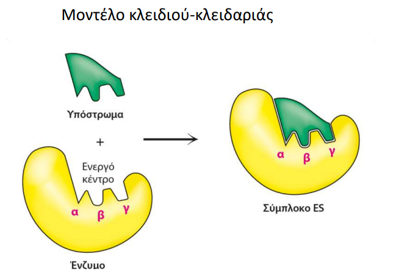
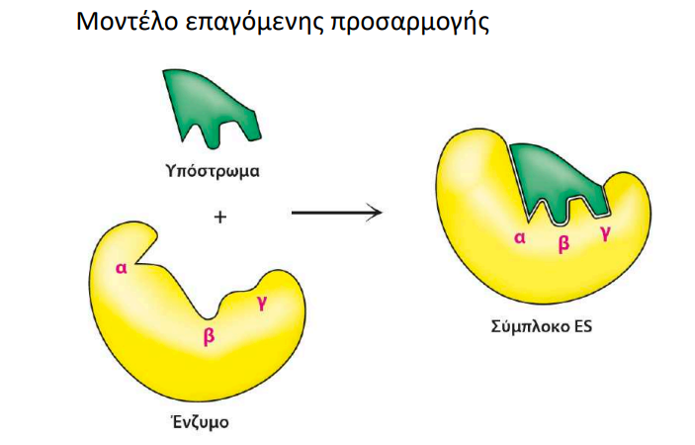

Ένζυμα: Οι ισχυροί καταλύτες της ζωής

Ένα από τα σημαντικότερα πεδία μελέτης της βιοχημείας είναι η έρευνα και η ανάλυση των ενζύμων. Ας εξετάσουμε, λοιπόν, τι ακριβώς είναι τα ένζυμα, ποιος είναι ο ρόλος τους, τη δομή τους, πώς λειτουργούν και, τέλος, αν θα μπορούσε να υπάρξει ζωή χωρίς αυτά.
Τι είναι τα ένζυμα;
Ας ξεκινήσουμε αρχικά με μία πιο ευρεία έννοια, εκείνη του καταλύτη. Στη χημεία ως καταλύτη ορίζουμε ένα μόριο ή υλικό, το οποίο επιταχύνει μία χημική αντίδραση χωρίς το ίδιο να καταναλώνεται κατά τη διάρκεια της διαδικασίας αυτής.
Είναι σημαντικό να τονιστεί ότι στη φύση υπάρχουν δύο είδη καταλυτών:
- Οι χημικοί καταλύτες
- Οι βιολογικοί καταλύτες
Στους βιολογικούς καταλύτες, ή αλλιώς βιοκαταλύτες, ανήκουν τα ένζυμα, τα οποία είναι βιολογικά μόρια που επιταχύνουν τις βιοχημικές αντιδράσεις στους ζωντανούς οργανισμούς χωρίς να υφίστανται μόνιμη μεταβολή. Παλαιότερα επικρατούσε η άποψη ότι όλα τα ένζυμα είναι πρωτεΐνες. Σήμερα γνωρίζουμε ότι, αν και η συντριπτική πλειοψηφία τους είναι πρωτεϊνικής φύσης, υπάρχει και μια κατηγορία ενζύμων που αποτελείται από μόρια RNA, τα οποία ονομάζονται ριβοένζυμα.
Και πού συναντάμε τα ριβοένζυμα;
Συναντώνται σε διάφορες κυτταρικές διεργασίες, όπως κατά τη διάρκεια της ωρίμανσης του mRNA, αλλά και στη διαδικασία της μετάφρασης, όπου το ριβοσωμικό RNA (rRNA) διαδραματίζει καταλυτικό ρόλο στη σύνθεση των πρωτεϊνών.
Όσον αφορά τα ένζυμα πρωτεϊνικής φύσεως, αυτά εντοπίζονται σχεδόν παντού: στο εσωτερικό του κυττάρου, στην κυτταρική μεμβράνη, αλλά και εκτός του κυττάρου. Για παράδειγμα, η πεψίνη είναι ένα ένζυμο το οποίο συναντάται στο εσωτερικό του στομάχου και βοηθάει στη διάσπαση των πρωτεϊνών.
Βασικοί όροι και ορισμοί
- Υπόστρωμα
- Το αντιδρών μόριο το οποίο δεσμεύεται στο ενεργό κέντρο του ενζύμου και μετατρέπεται σε προϊόν.
- Ενεργό κέντρο
- Η περιοχή με την οποία αντιδρά το υπόστρωμα και καταλύεται η αντίδραση.
- Συμπαράγοντες
- Διάφορα ιόντα ή μικρά —συνήθως— οργανικά μόρια, τα οποία είναι απαραίτητο να δεσμευτούν στο ένζυμο προκειμένου να επιτελέσει τη δράση του.
- Συνένζυμα
- Τα οργανικά μόρια που χρησιμεύουν ως συμπαράγοντες.
- Ενέργεια ενεργοποίησης (Ea)
- Η ελάχιστη ενέργεια που πρέπει να αποκτήσουν τα αντιδρώντα μόρια ώστε να φτάσουν στη μεταβατική κατάσταση, όπου αρχίζουν να σπάζουν οι δεσμοί των αντιδρώντων και να σχηματίζονται νέοι δεσμοί που οδηγούν στα προϊόντα.
Πώς δρουν;
Η δράση των ενζύμων έγκειται στο γεγονός ότι μειώνουν την ενέργεια ενεργοποίησης που χρειάζονται τα αντιδρώντα μόρια προκειμένου να σχηματιστούν τα προϊόντα.
Και πώς λειτουργούν;
Υπάρχουν δύο τρόποι δράσης των ενζύμων. Ο πρώτος ονομάζεται μοντέλο κλειδιού-κλειδαριάς, ενώ ο δεύτερος ονομάζεται μοντέλο επαγόμενης προσαρμογής.
Α. Μοντέλο κλειδιού-κλειδαριάς
Το βασικό χαρακτηριστικό αυτού του μοντέλου είναι ότι το ενεργό κέντρο του ενζύμου παρουσιάζει συμπληρωματικότητα ως προς το υπόστρωμα. Μετά την πρόσδεση του υποστρώματος στο ενεργό κέντρο, σχηματίζεται το σύμπλοκο ενζύμου-υποστρώματος, οδηγώντας στην πραγματοποίηση της αντίδρασης και στον σχηματισμό των προϊόντων.

Β. Μοντέλο επαγόμενης προσαρμογής
Αν και το μοντέλο «κλειδιού-κλειδαριάς» υποθέτει τέλεια αντιστοιχία δομών, σήμερα θεωρείται πιο ακριβές το μοντέλο της επαγόμενης προσαρμογής, σύμφωνα με το οποίο το ενεργό κέντρο προσαρμόζεται δυναμικά στο υπόστρωμα κατά την πρόσδεση. Αυτό σημαίνει ότι το ενεργό κέντρο του ενζύμου εμφανίζει αρχικά μερική συμπληρωματικότητα προς το υπόστρωμα. Κατά την προσέγγιση και πρόσδεση του υποστρώματος, το ένζυμο υφίσταται μικρές διαμορφωτικές αλλαγές, με αποτέλεσμα τη βελτίωση της συμπληρωματικότητας και τη διευκόλυνση της καταλυτικής δράσης.

Πηγή διαγραμμάτων: Τμήμα Χημείας, Πανεπιστήμιο Κρήτης
Θα μπορούσε να υπάρξει ζωή χωρίς τα ένζυμα;
Η παρουσία ενζύμων είναι απαραίτητη για τη ζωή, καθώς επιταχύνουν τις βιοχημικές αντιδράσεις έως και εκατομμύρια ή δισεκατομμύρια φορές. Χωρίς αυτά, οι περισσότερες αντιδράσεις στα κύτταρα θα πραγματοποιούνταν εξαιρετικά αργά ή πρακτικά καθόλου, με αποτέλεσμα το κύτταρο να μην μπορεί να παράγει ενέργεια, να συνθέτει απαραίτητες ουσίες ή να διατηρεί τις βασικές του λειτουργίες. Χωρίς καταλύτες, όπως τα ένζυμα, οι βιοχημικές αντιδράσεις θα ήταν τόσο αργές ώστε η διατήρηση της ζωής, όπως τη γνωρίζουμε, θα ήταν αδύνατη.
Βιβλιογραφία
- Agarwal, P. K. (2006). Enzymes: An integrated view of structure, dynamics and function. Microbial Cell Factories, 5, 2.
- Garrett, R. H., & Grisham, C. M. (2019). Βιοχημεία (1η ελληνική έκδ., 6η αμερικανική έκδ.). Αθήνα: Εκδόσεις Utopia.
- Robinson, P. K. (2015). Enzymes: Principles and biotechnological applications. Essays in Biochemistry, 59, 1–41.
- Ribeiro, A. J. M., Riziotis, I. G., Borkakoti, N., & Thornton, J. M. (2023). Enzyme function and evolution through the lens of bioinformatics. The Biochemical Journal, 480(22), 1845–1863.